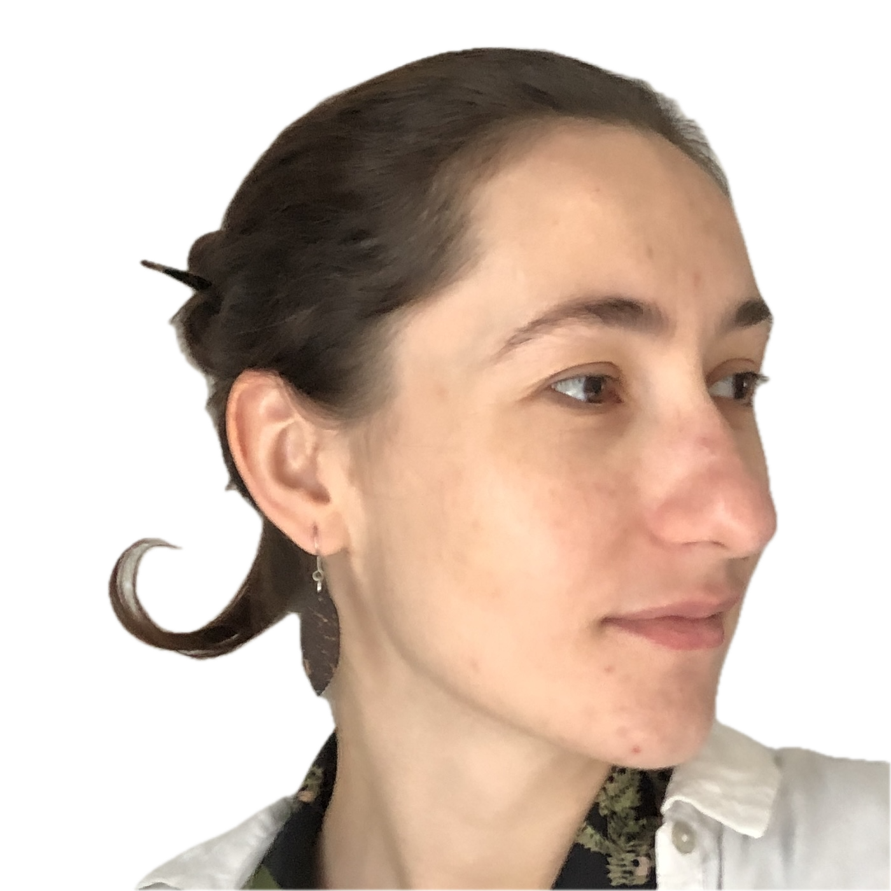

Hi there and Welcome!
I’m a passionate visual artist driven by the love of storytelling through images.
Storyboarding is where I feel most at home — a space where thoughts, emotions, and ideas come to life in a simple, expressive, and efficient way.
With a diverse background in storyboarding, animation, illustration, caricature, drawing, photography, and fine art, I bring projects to life from concept to completion with care and intention.
I'm also open to custom work such as whiteboard animations, animatics, tailored illustrations, and caricature portraits — each project is an opportunity to connect, to translate ideas into visual narratives.
My tools include Adobe Suite, Toon Boom Storyboard, Blender, and Procreate, all of which I use fluently. I’m constantly evolving, learning new techniques to deliver high-quality, meaningful visuals.
I’m looking to collaborate in inspiring environments, where creativity, challenge, and beauty come together to shape unique, emotionally engaging projects.
Please feel free to contact me here or via e-mail: morgunxenia@gmail.com
I speak fluently in French, English, Romanian and Russian.